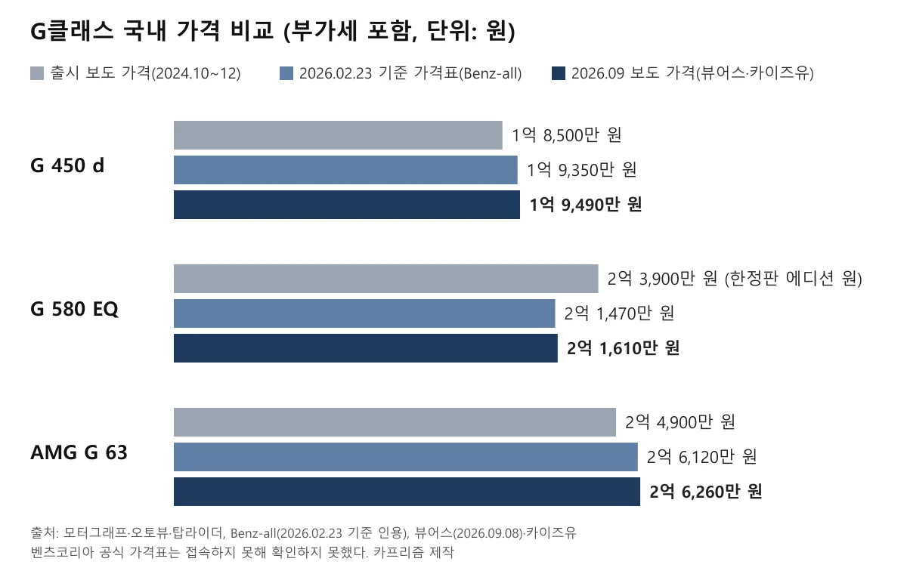
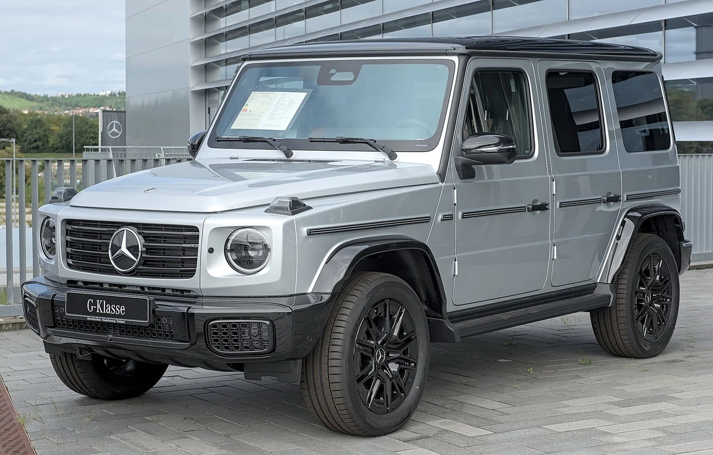
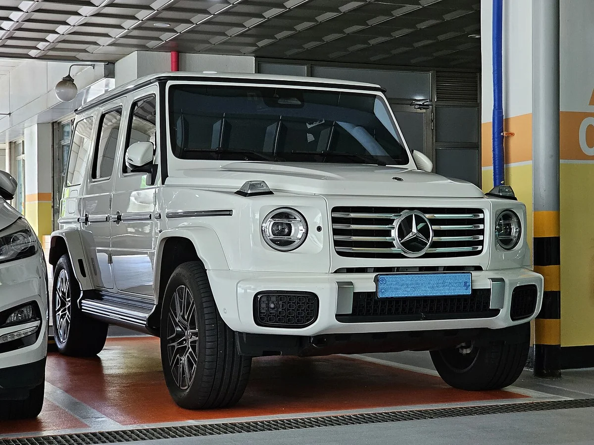
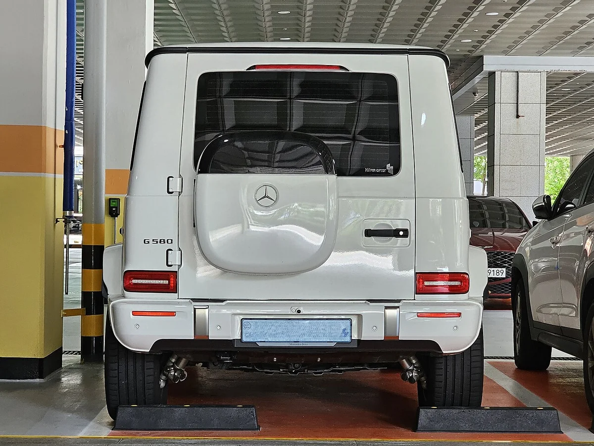
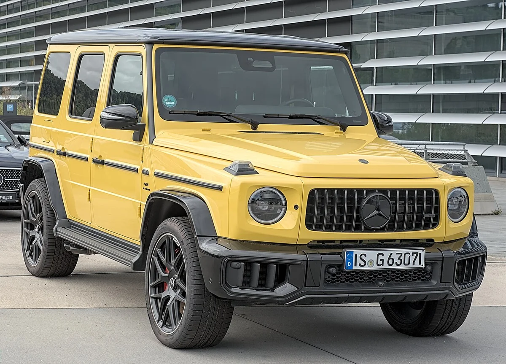
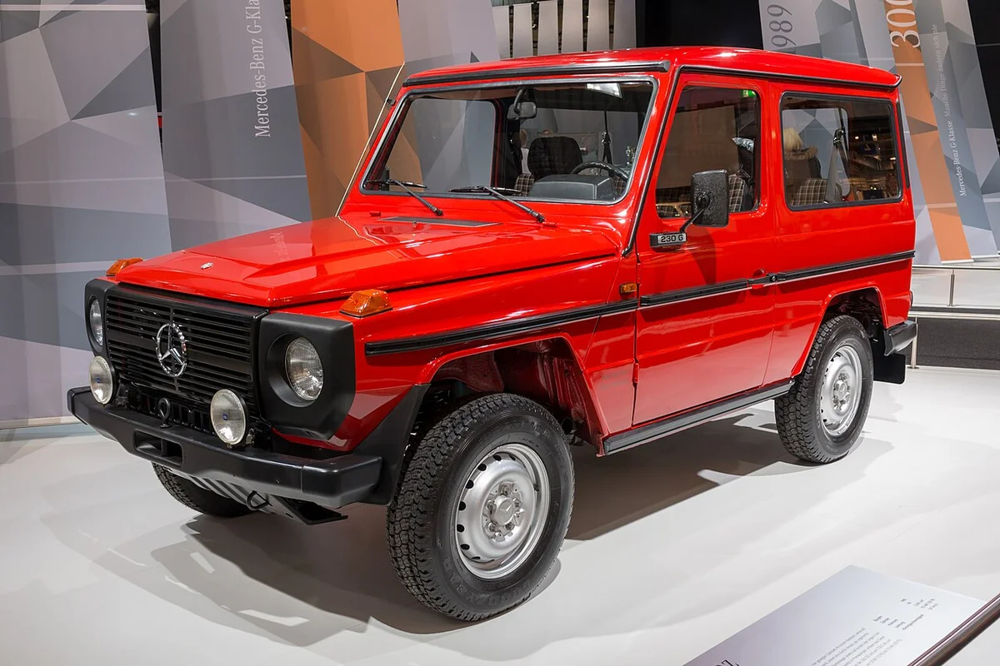
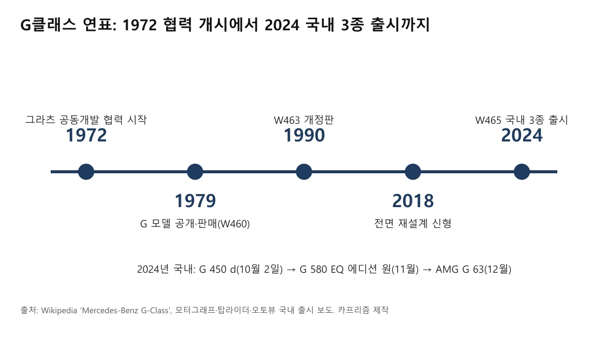
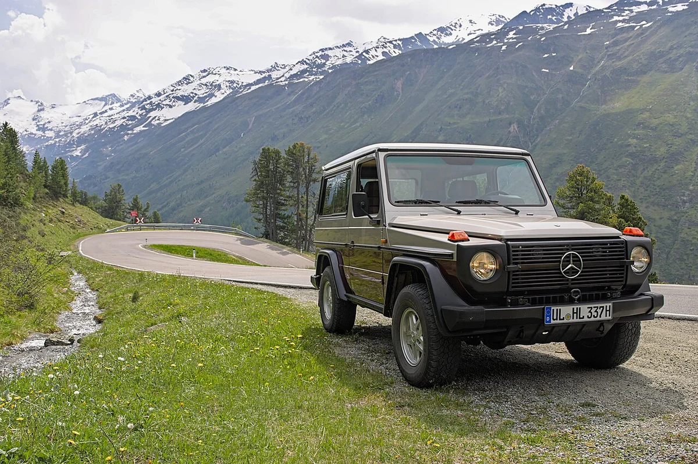
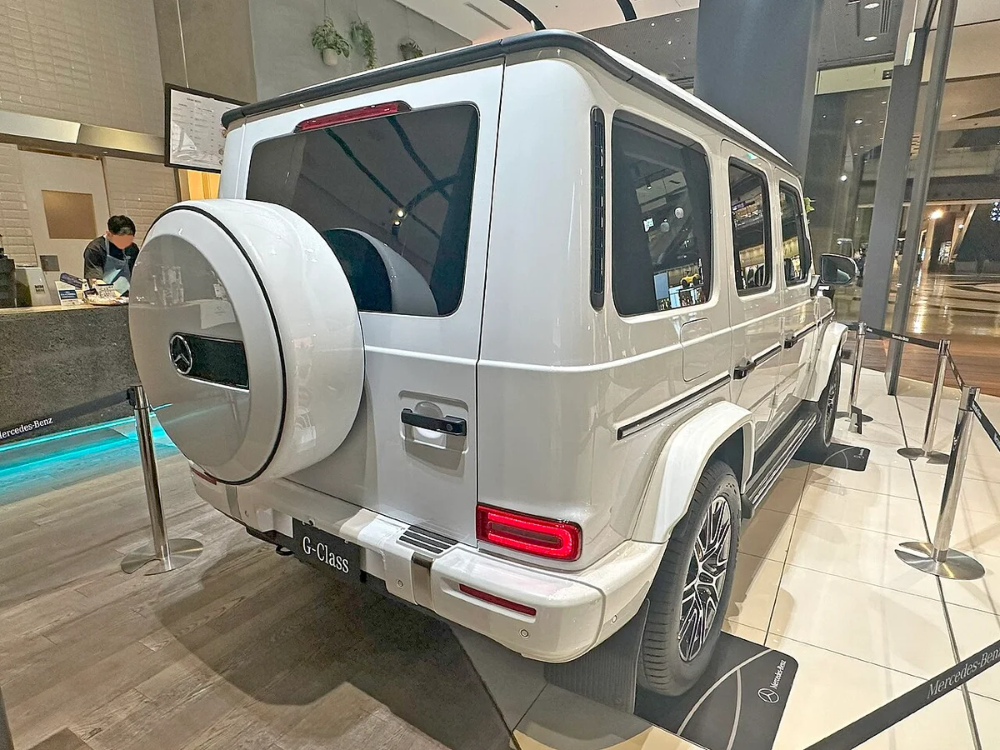

▲ G 450 d 런치 에디션(W465) 전시차 ⓒ Tokumeigakarinoaoshima, Wikimedia Commons (CC BY-SA 4.0)
G바겐이 눈에 들어오는데, 디젤·V8·전기 중 어느 쪽이 내 얘기인지 모르겠다면 이 글이 맞다. 가격표는 1억 9천만 원대부터 2억 6천만 원대까지 벌어져 있고, 연비는 리터당 10.0km와 5.8km로 갈린다. 거기에 전기 G 580은 같은 차인데 주행거리 숫자가 392km와 473km 두 가지로 돌아다닌다.
이 글은 국내 판매 3종(G 450 d, G 580 위드 EQ 테크놀로지, 메르세데스-AMG G 63)의 가격, 사양, 연비·주행거리, 세금을 표로 정리했다. 1979년 출발한 역사와 3개의 디퍼렌셜 락 같은 오프로드 사양도 함께 담았다. 전기 G 580의 구조는 전기 G바겐 쿼드모터 기사에서 다뤘으니 여기서는 가격과 선택 기준에 집중한다.
1. 지금 살 수 있는 G클래스는 세 가지, 가격표는 이렇다
국내 G클래스는 2024년 하반기에 3종이 순서대로 들어왔다. 10월 2일 G 450 d(출시가 1억 8,500만 원), 11월 전기 G 580 위드 EQ 테크놀로지(70대 한정 에디션 원 2억 3,900만 원), 12월 AMG G 63(2억 4,900만 원)이다. 이후 가격은 조금씩 달라졌다.
아래 표의 2월 열은 벤츠 정보 블로그 Benz-all이 "메르세데스-벤츠 코리아 공식 가격표(2026.02.23 기준)"를 옮긴 값이고, 9월 열은 뷰어스(2026.09.08)와 카이즈유에 실린 가격이다. 벤츠코리아 공식 사이트와 미디어 사이트는 이 글을 보강하며 다시 시도했지만 접속되지 않아, 공식 가격표를 직접 대조하지는 못했다. 메르세데스-벤츠 코리아 바로가기
| 트림 | 출시 당시 보도 가격 | 2026.02.23 기준(Benz-all) | 2026.09 보도(뷰어스·카이즈유) |
|---|---|---|---|
| G 450 d | 1억 8,500만 원(2024.10) | 1억 9,350만 원 | 1억 9,490만 원 |
| G 450 d 마누팍투어 | 확인 못 함 | 2억 1,770만 원 | 2억 1,910만 원 |
| G 580 위드 EQ 테크놀로지 | 2억 3,900만 원(에디션 원, 70대 한정) | 2억 1,470만 원(25년식은 2억 760만 원) | 2억 1,610만 원 |
| 메르세데스-AMG G 63 | 2억 4,900만 원(2024.12) | 2억 6,120만 원 | 2억 6,260만 원 |
| AMG G 63 마누팍투어 | 2억 7,500만 원(탑라이더 보도) | 확인 못 함 | 2억 8,980만 원(카이즈유) |
| AMG G 63 뱅가드 에디션 | - | 확인 못 함 | 2억 9,580만 원(카이즈유) |

▲ 출시 때보다 G 450 d는 990만 원, G 63은 1,360만 원 높은 값이 9월 보도에 올라 있다 ⓒ 카프리즘 제작 (자료: 모터그래프·탑라이더·Benz-all·뷰어스·카이즈유)
가격은 시점마다 다르다. 출시가 대비 2월 정리본은 G 450 d가 850만 원(1억 8,500만→1억 9,350만 원), AMG G 63이 1,220만 원(2억 4,900만→2억 6,120만 원) 높다. 그 사이 연식변경이나 구성 변화가 섞였을 수 있어 순수한 인상분으로 읽으면 안 된다.
더 눈여겨볼 대목은 2월 정리본과 9월 보도의 차이다. G 450 d(1억 9,350만→1억 9,490만 원), G 580(2억 1,470만→2억 1,610만 원), AMG G 63(2억 6,120만→2억 6,260만 원), 마누팍투어(2억 1,770만→2억 1,910만 원)가 하나같이 정확히 140만 원씩 올랐다. 승용차 개별소비세 인하(5%→3.5%, 인하 한도 100만 원)가 2026년 6월 30일 끝나고 7월 1일부터 기본세율 5%로 돌아간 시점과 겹친다. 교육세와 부가세까지 더한 최대 부담 증가분이 143만 원으로 알려져 있다(기획재정부 발표를 전한 보도).
다만 벤츠코리아가 인상 이유를 공식 설명한 자료는 찾지 못했다. 세금 환원분이 가격에 반영됐다는 것은 숫자의 일치에서 나온 카프리즘의 추정이다. 카이즈유 페이지에는 기준일이 적혀 있지 않지만, 같은 가격이 2026년 9월 뷰어스 보도에도 나와 지금 가격표에 가까운 값으로 보인다. 그래서 이 글은 9월 보도 가격을 현재가로, 2월 정리본을 비교용으로 함께 싣는다.
가솔린 G 500은 국내에 들어오지 않았다. 2024년 G 450 d 출시 보도는 디젤에 이어 전기 G 580과 AMG G 63이 연내 추가된다고 3종 라인업을 밝혔고, 2026년 9월 뷰어스 보도도 G 500을 국내 미출시로 적었다. 해외 자료에서 자주 보이는 이름이라 덧붙인다.
2. 사양과 연비를 한 표로 놓으면: 디젤 10.0, V8 5.8, 전기 3.0km/kWh
세 모델은 연료도 철학도 다르다. G 450 d는 3.0리터 직렬 6기통 디젤에 48V 마일드 하이브리드가 붙고, G 63은 4.0리터 V8 바이터보, G 580은 바퀴마다 모터를 단 전기차다.
| 항목 | G 450 d | AMG G 63 | G 580 EQ |
|---|---|---|---|
| 동력 | 3.0ℓ 직6 디젤(2,989cc)+48V 마일드 하이브리드 | 4.0ℓ V8 바이터보 가솔린+48V | 모터 4개(바퀴별), 118kWh 배터리 |
| 최고출력 | 367마력 | 585마력 | 587마력(합산) |
| 최대토크 | 76.5kg·m | 86.7kg·m | 1,164Nm |
| 변속기 | 9단 자동 | AMG 스피드시프트 9단 | - |
| 0→100km/h | 5.8초(해외 제원 자료 기준) | 4.4초 | 4.7초 |
| 복합 연비·전비 | 10.0km/ℓ(국내 4등급) | 5.8km/ℓ | 약 3.0km/kWh(미확인) |
| 주행거리(국내 인증) | - | - | 392km(상온 복합) |
| 공차중량 | 미확인 | 미확인 | 3,060kg(시승기 보도) |
출력과 토크는 출시 보도(모터그래프·탑라이더·오토뷰)의 값이다. 연비는 뷰어스(2026.09.08)가 국내 인증 기준이라며 G 450 d 복합 10.0km/ℓ(4등급), AMG G 63 복합 5.8km/ℓ로 전했다. 다만 한국에너지공단 인증 원자료는 열람하지 못해 직접 대조하지는 못했다.
G 450 d의 가속 성능은 한국 출시 보도에 없고, 해외 제원 자료에 0→100km/h 5.8초, 최고속도 210km/h로 나온다. 제조사 국내 발표가 아니라 참고값이다. 전기 G 580의 전비 3.0km/kWh는 카이즈유의 연비 표기(3.0~10.0, 단위가 km/kWh와 km/ℓ 혼재)에서 읽은 값이라 확정하지 못했다. 참고로 392km를 배터리 118kWh로 나누면 약 3.3km/kWh이므로, 충전 손실을 감안한 3.0 안팎이라는 값과 크게 어긋나지는 않는다(카프리즘 계산).
마력 표기도 짚어 둔다. 한국 보도의 "587마력"은 미터마력(PS) 기준이고, 같은 차를 해외 자료는 579hp로 적는다. 숫자가 달라 보이지만 단위 차이다.

▲ 슈투트가르트에서 촬영된 W465 G 450 d. 각진 차체와 둥근 헤드램프가 G클래스의 얼굴이다 ⓒ Alexander-93, Wikimedia Commons (CC BY-SA 4.0)
연료 사용량으로 바꿔 보면 감이 온다. 1년에 1만 5천km를 달린다고 가정하면 G 450 d는 복합 연비 기준 약 1,500ℓ, G 63은 약 2,590ℓ가 든다. 전기 G 580은 전비 3.0km/kWh 기준 약 5,000kWh다. 실제 연료 단가는 시점마다 달라 금액으로 환산하지 않았다.
3. 전기 G 580, 392km와 473km 중 무엇을 믿어야 할까
392km는 국내 인증 상온 복합 주행거리이고, 473km는 유럽 WLTP 기준 최대치다. 배터리는 같은데 측정 방식이 달라 숫자가 갈린다. 해외 자료에는 배터리 용량이 115~116kWh로 적힌 곳도 있어 국내 보도의 118kWh와 다르다. 국내 구매자가 참고할 기준은 392km다.
| 기준 | 수치 | 적용 시장 | 의미 |
|---|---|---|---|
| 국내 인증 상온 복합 | 392km | 한국 | 국내 구매자가 참고할 값 |
| WLTP 최대 | 473km | 유럽 등 | 해외 자료·시승기에 흔히 인용 |
두 값의 차이는 81km다. 시험 조건과 보정 방식이 다르기 때문으로 알려져 있으나, 환경부 인증 원자료의 도심·고속 수치와 전비는 열람하지 못했다. 겨울철 저온 주행거리도 별도 수치를 찾지 못해 싣지 않았다.
실제 주행 감각은 시승기 한 편이 참고가 된다. 서울에서 오프로드 주행 약 2시간을 포함해 3시간 13분을 달리는 동안 배터리가 83%에서 79%로 4%p 줄었다는 보도가 있다. 한 번의 시승 기록이라 일반화할 수는 없고, 공차중량이 3,060kg이라는 점과 함께 읽을 만한 참고 정보다.
가격 면에서는 흥미로운 점이 있다. 벤츠코리아는 2024년 11월 70대 한정 에디션 원(2억 3,900만 원)을 먼저 내놓고 일반 모델은 2025년 상반기에 출시하겠다고 밝혔다. 이후 일반 판매 가격표는 2억 1,470만 원(2월 정리본), 2억 1,610만 원(9월 보도)으로 올라 있다. 에디션 원은 AMG 라인 외장과 나이트 패키지, 나파 가죽 같은 전용 사양이 얹힌 한정판이라 같은 차의 가격 인하로 읽을 수는 없다. 2억 원대 전기차라 국고 보조금 대상이 아니라는 점은 기존 기사에서 짚었다.

▲ G 580 위드 EQ 테크놀로지. 외관은 내연 G클래스와 거의 같다 ⓒ Damian B Oh, Wikimedia Commons (CC BY-SA 4.0)

▲ 후면의 스페어 커버와 'G 580' 표기. 각진 차체가 주행거리에 불리하다는 점은 기존 기사에서 다뤘다 ⓒ Damian B Oh, Wikimedia Commons (CC BY-SA 4.0)
4. 3개의 디퍼렌셜 락과 70cm 도강: 출시 보도의 오프로드 사양
G클래스를 G클래스답게 만드는 것은 세 곳의 디퍼렌셜 락이다. 모터그래프는 G 450 d 출시 보도에서 센터 오프로드 콕핏에 디퍼렌셜 락 스위치 3개가 있다고 전했다. 락이 걸리면 한쪽 바퀴가 헛돌아도 반대쪽으로 구동력이 전달된다.
| 항목 | 내용 |
|---|---|
| 디퍼렌셜 락 | 스위치 3개(센터 오프로드 콕핏) |
| 차축~지면 간격 | 241mm |
| 도강(물·진흙) 깊이 | 최대 70cm |
| 측면 경사 주행 | 최대 35도 |
| 구동 보조 | 오프로드 감속 기어, 어댑티브 댐핑 기본 |
| 주행 모드 | 트레일·락·샌드(다이내믹 셀렉트) |
| 시야 보조 | 투명 보닛(360도 카메라 연동), G클래스 최초 |
| 전기 G 580 비교 | 도하 깊이 최대 850mm(내연기관보다 150mm 깊음), 등판 100%, 측면 35도(오토뷰 출시 보도) |
AMG G 63 출시 보도에는 샌드·트레일·락 3가지 프로그램과 전자식 디퍼렌셜 락이 적혀 있고, 오프로드 패키지 프로를 고르면 프로그램이 2개 더해진다고 나온다. 전기 G 580은 기계식 락 대신 바퀴별 모터의 지능형 토크 벡터링으로 디퍼렌셜 락 기능을 구현한다. 오토뷰는 G 580이 G-스티어링(제자리 선회), G-턴, 3단계 오프로드 크롤링 크루즈 컨트롤을 갖췄고, 배터리를 보호하는 하부 패널이 탄소 복합 소재라고 전했다.
이 수치들은 제조사 발표를 옮긴 매체 기사 기준이며, 트림·연식별 세부 사양은 공식 제원표로 확인해야 한다.

▲ AMG G 63(2024년~). 출시 보도 기준 585마력, 0→100km/h 4.4초다 ⓒ Alexander-93, Wikimedia Commons (CC BY-SA 4.0)
5. 1979년 군용 구상에서 출발: G클래스는 왜 "안 바뀐 차"일까
G클래스는 1972년 다임러-벤츠와 오스트리아 슈타이어-다임러-푸흐가 그라츠에서 협력을 시작해 만든 차다. 위키피디아는 군용 차량으로 구상됐고 1979년 민간에 판매가 시작됐다고 정리한다. 슈투트가르트가 디자인과 시험을, 그라츠가 생산 계획을 맡았다.

▲ 초기 W460 계열 230 G 전시차(Techno-Classica 2018). 직선 위주의 차체 비율이 지금과 닮았다 ⓒ Matti Blume, Wikimedia Commons (CC BY-SA 4.0)
1979년 G 모델은 프랑스 툴롱의 오프로드 시험장에서 열린 프레스 행사로 공개됐다. 위키피디아는 판매 개시를 같은 해 9월로 적는다. 공개 행사 일자는 자료마다 2월 초로 엇갈려 이 글은 정확한 날짜를 적지 않는다.
이란과의 관계는 설명이 갈린다. 위키피디아는 이란 국왕의 제안에서 군용 차량으로 개발됐다고 적지만, 영국 오토카는 그가 차를 주문했다는 설에 이의를 제기했다. 이란 군용 2만 대 주문이 혁명으로 무산됐다는 설도 일부 보도에만 나오는 내용이라 이 글은 사실로 단정하지 않는다.
벤츠가 직접 낸 역사 자료(공식 미디어·헤리티지 사이트)는 접속이 막혀 열람하지 못했다. 위 내용은 위키피디아와 영국 자동차 매체 보도에 근거한다.

▲ G클래스 연표 요약 ⓒ 카프리즘 제작 (자료: Wikipedia, 국내 출시 보도)
국내에서 G클래스는 2012년 처음 들어왔다. 벤츠코리아는 2024년 11월 국내 누적 판매가 1만 대를 넘었고, 한국이 전 세계 G클래스 시장에서 다섯 번째로 큰 시장이라고 밝혔다(다나와 2024.12.17 보도).
세대 구분은 이렇다. 1979년 W460이 시작이고, 1990년 W463이 개정판으로 이어졌으며, 2018년에 차체·섀시·파워트레인·실내를 크게 바꾼 신형이 나왔다. 2024년부터의 W465(전기 G 580 포함)가 지금 국내에서 파는 세대다. 각진 실루엣은 이렇게 세대를 건너 이어졌다.
같은 세그먼트를 노린 경쟁 시도가 궁금하면 BMW G74 프로젝트 중단 기사를 보면 된다. 그 글은 BMW의 판단을, 이 글은 G클래스 자체의 라인업을 다뤄 겹치지 않는다.

▲ W460 250 GD. 초기형의 박스형 차체가 지금까지 이어졌다 ⓒ Alexander Migl, Wikimedia Commons (CC BY-SA 4.0)
6. 계약 후에 놀라지 않으려면: 세금·보험·유지 포인트
세 모델 모두 일반 구매자에게는 취득세 7%가 먼저 큰 돈으로 다가온다. 비영업용 승용차 취득세율은 7%이고 부가세를 뺀 금액이 과세표준이다. 아래는 위 9월 보도 가격으로 카프리즘이 계산한 개략값이며, 공채 매입이나 부대비용은 뺐다.
| 트림 | 취득세(약) | 연 자동차세(약) |
|---|---|---|
| G 450 d (1억 9,490만 원) | 1,240만 원 | 77.7만 원(2,989cc) |
| AMG G 63 (2억 6,260만 원) | 1,671만 원 | 103.5만 원(3,982cc) |
| G 580 EQ (2억 1,610만 원) | 1,375만 원(감면 전), 약 1,235만 원(140만 원 감면 후) | 13만 원(전기차 정액) |
계산식은 단순하다. 취득세는 공급가(가격÷1.1)의 7%, 자동차세는 1,600cc 초과 cc당 200원에 지방교육세 30%를 더한 값이다. 전기차 정액 13만 원은 자동차세 10만 원에 지방교육세 3만 원을 합한 값이다. 차령 경감은 반영하지 않았다.
전기 G 580에는 취득세 감면이 붙는다. 지방세특례제한법 제66조제4항은 전기자동차의 취득세액이 140만 원 이하면 면제하고, 140만 원을 넘으면 그 금액에서 140만 원을 공제한다고 정한다(국가법령정보센터). 9월 보도 가격(2억 1,610만 원)으로 계산한 취득세 약 1,375만 원에서 140만 원을 빼면 약 1,235만 원이다. 이 조항은 2026년 12월 31일까지 취득하는 경우에 적용되고, 그 이후 연장 여부는 확인하지 못했다. 연말이 가까운 만큼 출고·등록 시점이 기한 안인지 딜러에게 먼저 물어볼 일이다.
개별소비세는 승용차 인하 조치(5%→3.5%)가 2026년 6월 30일 끝나 7월 1일 출고분부터 5%로 돌아갔다. 적용 기준은 계약일이 아니라 출고일이다. 전기차 개별소비세 감면(한도 300만 원)은 2026년 12월 31일까지 유지된다(정책브리핑 정책뉴스). 이 세금은 이미 차량 가격에 녹아 있어 별도로 내지는 않는다.
| 항목 | 확인할 것 |
|---|---|
| 법인 구매 | 8,000만 원 이상 업무용 승용차는 연두색 번호판 대상이다. G클래스 3종은 모두 가격이 넘는다 |
| 보험 | 차량가액이 높아 자차 보험료 비중이 크다. 공식 요율표는 확인하지 못했고 견적 비교가 답이다 |
| 연료·충전 | 디젤 10.0km/ℓ, V8 5.8km/ℓ, 전기 약 3.0km/kWh |
| 판매 규모 | 뷰어스(2026.09.08)는 국내 판매를 2025년 3,289대, 2026년 1~7월 1,695대로 전했다(월평균 약 274대→약 242대, 카프리즘 계산). 디젤·AMG·전기 합산이며 집계 기관은 적혀 있지 않아 KAIDA 원자료와는 대조하지 못했다 |
연두색 번호판 대상 차종은 연두색 번호판 차종 순위, 법인 리스 세제는 업무용 리스 세제 가이드를 보면 된다. 보험료 견적을 비교하는 방식은 세단 보험료 비교 기사를 참고할 수 있다.

▲ G 450 d 후면. 각진 박스형 차체와 스페어 커버가 특징이다 ⓒ Tokumeigakarinoaoshima, Wikimedia Commons (CC BY-SA 4.0)
7. 결국 어느 쪽을 골라야 하나: 성향별 선택 기준
정답은 하나가 아니고, 어디에 돈을 쓰고 싶으냐에 달렸다. 숫자로 나온 사실만 근거로 정리하면 아래와 같다.
| 이런 사람이라면 | 맞는 쪽 | 근거 |
|---|---|---|
| 가격과 연료비를 아끼고 싶다 | G 450 d | 세 모델 중 가장 싼 가격표, 복합 10.0km/ℓ, 가장 낮은 자동차세(전기 제외) |
| 성능과 존재감이 우선이다 | AMG G 63 | 585마력, 0→100km/h 4.4초. 대신 연비 5.8km/ℓ와 세금이 가장 크다 |
| 충전 환경이 있고 정숙함·즉각 토크가 좋다 | G 580 EQ | 587마력, 4.7초, 국내 인증 392km. 충전 환경과 보조금 없음을 계산에 넣어야 한다 |
▲ 국내에서 촬영된 G 580 위드 EQ 테크놀로지. 파란색 번호판은 전기차에 붙는 번호판이다 ⓒ Damian B Oh, Wikimedia Commons (CC BY-SA 4.0)
오프로드 사양 자체는 트림과 무관하게 G클래스 공통 설계의 영향이 크다. 그래서 선택은 연료비, 세금, 충전 환경 같은 일상 비용에서 갈린다. 전기차 충전이 어려운 아파트 거주자라면 392km라는 숫자가 사용 방식을 정한다. 벤츠의 충전 결제 방식 변화는 PnC 도입 기사에서 확인할 수 있다.
8. 이 글이 확인하지 못한 것
- 벤츠코리아 공식 가격표·홈페이지 제원: 공식 사이트와 미디어 사이트가 열리지 않아 2월 Benz-all 정리본과 9월 뷰어스·카이즈유 보도로 대체했다. 140만 원 인상의 이유도 공식 확인하지 못했다
- 한국에너지공단·환경부 인증 원자료: 연비 10.0·5.8km/ℓ는 뷰어스 보도 기준이고, G 580의 전비(약 3.0km/kWh)와 도심·고속 주행거리는 확인하지 못했다
- KAIDA 원자료: 2025년 3,289대, 2026년 1~7월 1,695대는 뷰어스 보도 수치이며 집계 기관은 명시되지 않았다
- 벤츠 공식 역사 자료: 위키피디아와 매체 보도로 대체했다. 공개 행사 일자와 이란 관련 설은 단정하지 않았다
- G 450 d 가속 성능: 국내 발표에는 없고 해외 제원 자료의 5.8초만 확인했다
- 2027년 이후 전기차 취득세 감면: 현행 조항은 2026년 12월 31일 취득분까지다
9. 요약
국내 G클래스는 G 450 d(1억 9,490만 원), 전기 G 580 EQ(2억 1,610만 원), AMG G 63(2억 6,260만 원)의 3종이며, 이는 2026년 9월 보도 기준 가격(부가세 포함)이다. 2월 23일 가격표 정리본보다 세 모델 모두 140만 원 높고, 출시가(1억 8,500만 원, 에디션 원 2억 3,900만 원, 2억 4,900만 원)와 비교하면 G 450 d와 G 63은 990만 원, 1,360만 원 높다. 가솔린 G 500은 국내에 없다.
연비는 G 450 d 복합 10.0km/ℓ, G 63 5.8km/ℓ이고, 전기 G 580은 국내 상온 복합 392km(유럽 WLTP 최대 473km는 다른 기준)다. 오프로드는 디퍼렌셜 락 3개, 도강 70cm, 측면 경사 35도가 출시 보도에 나오고, 전기 G 580은 도하 깊이 850mm다. 자동차세는 G 450 d 연 약 77만 원, G 63 약 104만 원, 전기 13만 원이고, 취득세는 공급가의 7%이되 전기 G 580은 2026년 말까지 취득하면 140만 원을 감면받는다.
가격과 연비는 디젤, 성능은 G 63, 정숙함은 전기 G 580이 앞선다. 이 글은 벤츠코리아 공식 가격표와 인증 원자료를 직접 열지 못했으므로 최종 숫자는 딜러 견적서로 맞춰 보는 것이 좋다.